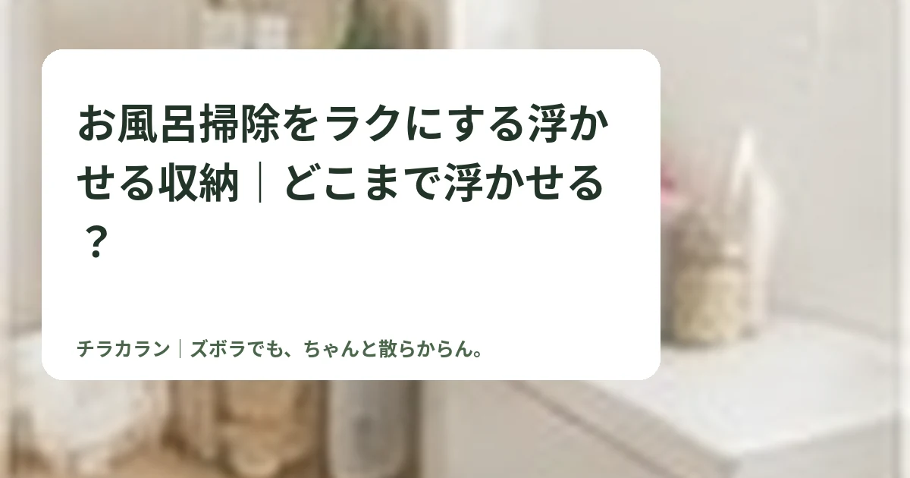
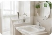

お風呂掃除をラクにする浮かせる収納｜どこまで浮かせる？
お風呂の床や棚に物を置くと水が残りやすくなります。よく使う物だけ浮かせると、掃除前にどかす手間を減らせます。

結論：全部浮かせなくても「掃除の邪魔になる物」からでOK
浮かせる収納の目的は、おしゃれに見せることではなく、掃除するときに物をどかす回数を減らすことです。
浮かせやすい物
- シャンプー・ボディソープ

- 掃除ブラシ
- 洗面器
- お風呂イス
- 水切りワイパー
床やカウンターに直置きしている物から優先すると変化を感じやすいです。
マグネットが使えるか確認
浴室の壁によってはマグネット収納が使えます。使えない場合はタオルバーに掛けるタイプや吸盤タイプなどを検討します。耐荷重と取り付け面の条件は商品ごとに確認しましょう。
浮かせても詰め込みすぎない
ラックにボトルをぎっしり置くと、結局ラック自体の掃除が大変になります。使っていない物は浴室外へ出す方がラクな場合もあります。

まとめ
まずは「掃除のたびに持ち上げている物」を1つ浮かせるだけでもOK。掃除の工程が減るかどうかで判断しましょう。
この悩みで使いやすいアイテム
当サイトはアフィリエイト広告を利用しています。
浴室 浮かせる収納 マグネット
ショップ連携後に購入先ボタンが表示されます。
シャンプー 吊り下げ ホルダー
ショップ連携後に購入先ボタンが表示されます。
チラカランの考え方
頑張る回数を増やすより、頑張らなくても回る仕組みを。